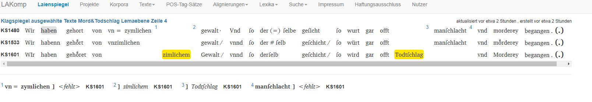
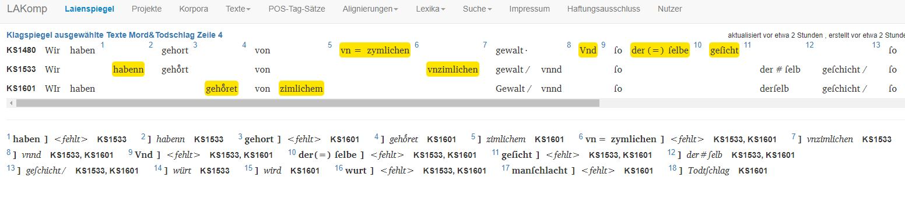
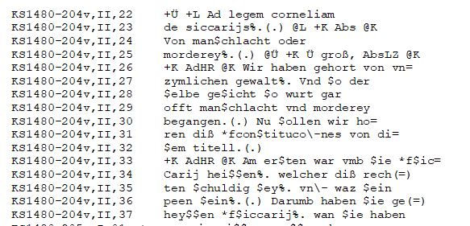
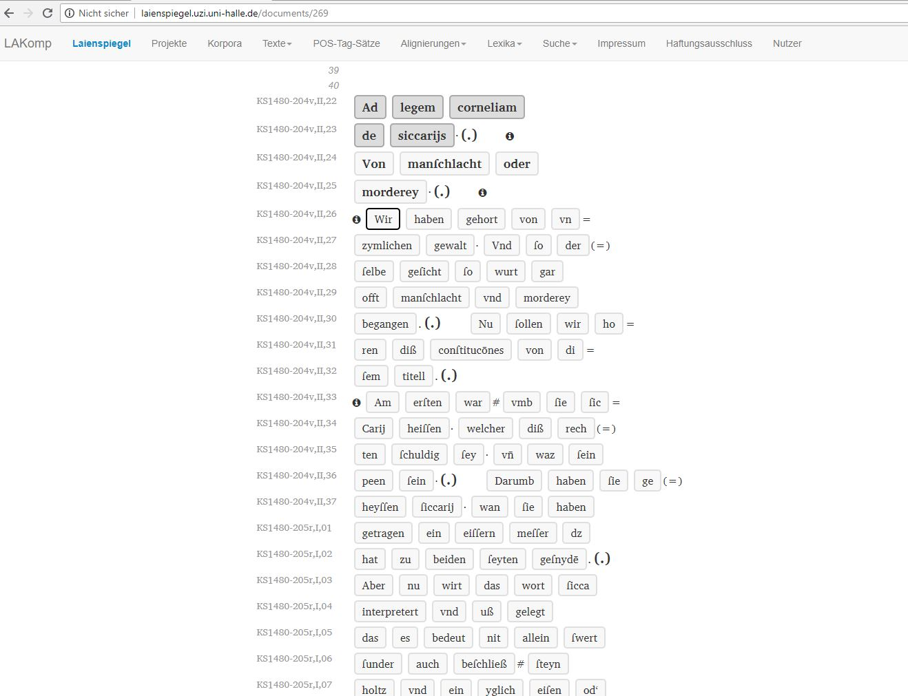
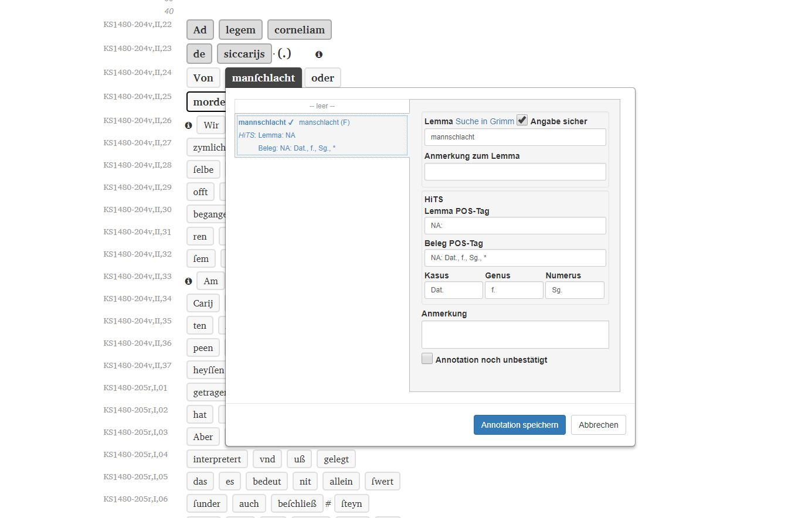

LAKomp. Lemmatize, annotate and compare texts in non-standardized languages
Table of Contents
Abstract
LAKomp is a semi-automatic web-based tool developed for the annotation and comparison of historical, non-standardized texts. In contrast to other tools, LAKomp does not automate annotation but makes manual annotation simple and fast offering a semi-automatic tagging feature and a simple interface. Therefore, the tool is especially useful for scholars of the Humanities. An alignment view and a generated Partiturtext make a comparison of different textual variants possible. LAKomp is useful to individual researchers as well as larger research groups as various users can annotate simultaneously. It was developed at the Martin-Luther-University Halle-Wittenberg.
Introduction
Historical language data, such as Early New High German (ENHG) texts, show a very high degree of variation on a graphematic as well as morphological and lexical level. Therefore, quantitative research in diachronic linguistics faces various challenges, as most tools in Natural Language Processing are trained on standardized data and do not perform well on non-standardized varieties (Bennett et al. 2010). Linguists working on these non-standardized language varieties generally use manually annotated corpora that enable the automatic extraction of lexical, morphological, and syntactic information and thereby allow statistically valid observations.
In order to build a corpus, texts have to be enriched with metadata, tokenized, lemmatized and annotated. As even the best automatic lemmatization tools and part-of-speech (PoS) taggers produce a certain error rate, manual correction and annotation are usually necessary to produce valid results. This makes corpus building both a time-consuming and tiring process for annotators.
LAKomp1 is a semi-automatic, web-based tool developed for Early New High German texts that provides a user-friendly interface, which makes corpus creation and text comparison easier and faster (Aehnlich and Kösser 2016). It was designed for projects that analyze works that are transmitted through various textual variants and show a high degree of graphematic variation. The tool can automatically identify similar text passages across different textual variants, align them and list deviations from a generated normalized text. At the same time, it has an integrated machine-learning feature that presents suggestions for the lemmatization and annotation of text based on the previous input. This process is referred to as semi-automatic annotation in the course of this review.
In this article, we2 will present the tool from the perspective of a user. First, we explain its development and user access (section “Project and development” and “User profile and access”). In the sections “Corpus creation” “Text comparison”, and “Performance” we explain the general workflow. The interface is described in the section “User interface”. Sections “Input and output” and “Documentation and support” detail how input and output are dealt with and where documentation and support can be accessed. In section “LAKomp in use” we give a detailed account of how the tool was used for the project Digital Diachronic Text Comparison of Early Modern Legal Sources (Aehnlich 2021). Finally, some concluding remarks are provided in the “Conclusion”.
LAKomp: Project, access, data and workflow
Project and development
The acronym LAKomp stands for Lemmatisierung, Annotation, Komparation von Varianten frühneuhochdeutscher Texte (Lemmatization, Annotation, Comparison of Variants of Early New High German Texts). The developers of the tool are André Medek, Aletta Leipold, Jörg Ritter, and Paul Molitor. LAKomp is a web-based tool, built using the programming language Ruby on Rails3. It was developed within the interdisciplinary project SaDA (Semiautomatische Differenzanalyse von komplexen Textvarianten/ Semiautomatic Difference Analysis of Complex Textual Variants)4 in order to allow corpus building and comparison of textual variants within a user-friendly interface. After the end of the project, the team ensures maintenance and support for the tool.
LAKomp was originally developed and is currently used for preparing the Pfalzpaint edition, to be published in hybrid form, both digitally and as a printed book, in 2023. The aim of this edition is to present the textual variants of the Wundarznei by Heinrich von Pfalzpaint (ca. 1400-1464, cf. Leipold et al. 2014) and to provide a highly structured and annotated corpus useful to researchers with various interests (Leipold et al. 2015, 171). During the annotation process for the Pfalzpaint edition, LAKomp was used for another project running at the same time, namely the annotation of the Referenzkorpus Frühneuhochdeutsch5. The project group in Halle used LAKomp as an alternative to the annotation tool CorA (Bollmann et al. 2014), which was used by the other project groups (see section “User interface” for a short comparison of both tools). For the Halle group, the main reason for using LAKomp was that the user interface ensures a faster annotation process.
User profile and access
LAKomp was designed for humanities scholars, especially linguists, to create a corpus consisting of different textual variants with a high degree of spelling variation in order to analyze their relationship. It was designed for the specific tasks of scholarly editing ENHG texts presenting textual variants, but is as useful for the lemmatization and morphological annotation of other corpora. It is possible to ask for modifications of the tool in order to analyze texts in a language other than ENHG (personal correspondence with Jörg Ritter, 13.12.2021). LAKomp can be used free of charge.
Potential users have to contact the project group via the e-mail address specified on the website https://lakomp.uzi.uni-halle.de/ and will receive their own URL for using the tool. LAKomp can be accessed with all common browser versions and does not rely on plugins. The tool was designed for large screens; thus, it does not fully work on mobile devices.
All features in LAKomp can be used immediately without requiring long training periods. Working with the tool, it becomes apparent that it was designed for and with Humanities scholars. The intuitive design of the user interface makes it possible for any user with a linguistic background to start lemmatizing and annotating. The interface displays the features clearly and no specific programming knowledge is required to use the tool.
LAKomp was designed to be used by single researchers or larger groups. Therefore, various users can work simultaneously on one project. LAKomp has an integrated user administration board in which user roles and rights can be managed. Not every user has all editing rights. The administrator assigns roles and has unrestricted rights, while annotators can only annotate the documents. This is particularly useful for working on projects with several employees and student assistants.
Corpus creation
The workflow for corpus creation and subsequent text comparison consists of three steps. First, texts have to be transcribed within the web-interface. During the annotation process, the texts are pre-processed, i.e., enriched with modern punctuation. This makes subsequent automatic data processing possible. Secondly, the texts are lemmatized and annotated with PoS and morphological information. The annotation process is referred to as semi-automatic, because both lemmatization (normalization), PoS and morphological annotations are done manually but are greatly sped up by automatically generated suggestions. In a third step, textual variants can be compared with each other. In the interface, at first similar text passages are identified and contrasted; in the detailed comparison, these passages can be presented synoptically.
Within the tool, lemmatization is referred to as normalization. Normalizing the spelling leads to good results in the automatic text comparison and is the first step before annotating morphological information. For the lemmatization, there are preset lexica, namely the Brothers Grimm German Dictionary6 and the dictionary of the Early New High German reference corpus.7 For each corpus, a project-internal dictionary is generated. This dictionary grows as the lemmatization of the texts proceeds. When generating automatic suggestions, these growing dictionaries are given priority.
In the next step, the users annotate the text with PoS and morphological information. They can decide whether they want to use the STTS 8 or HiTS tagset (Dipper et al. 2013). The Stuttgart-Tübingen-Tagset (STTS) is the standard tagset for Modern German corpora. Since this tagset can only be partially applied to older stages of German, the Historical Tagset (HiTS) (Dipper et al. 2013) was developed. The main difference between the two tagsets is the consistent double labeling of lemmas in HiTS. For each token, it distinguishes between the PoS-tag of the dictionary form and that of the specific occurrence. This makes it possible, for example, to tag an adjective that is used as an adverb. Hence, language change/grammaticalization in progress can be studied. Both tagsets allow for the definition of new tags for which values (morphological information) can be adapted in LAKomp.
The tool provides the annotation layers "Lemma", "PoS-Tag Lemma", "PoS-Tag Record”, “case", "gender" and "number", as well as comments sections for both lemma and PoS-tag. In this respect, the tool is similar to CorA (Bollmann et al. 2014), which also does not give the flexibility of defining individual annotation layers depending on the specific annotation task (Bollmann et al. 2014, 87). This means that mistakes due to typos or spelling variation within the annotation layers are prevented, as no plain text annotation is possible, but that the user has to choose from a closed list of values for each layer. The user, however, can customize the list of tags and values.
A central feature of LAKomp is that changes within the single steps of the workflow can be made without having to repeat the subsequent steps. If, for example, an error in the transcription is found while comparing the texts, it is not necessary to correct, lemmatize and annotate the entire text part again. Only the specific token with its annotations has to be corrected, while the adjacent tokens and annotations are preserved. This limits the amount of work to the absolute necessary.
Performance
For historical language data, automatic tagging still faces challenges. The tagger either needs a normalization layer (Bollman et al. 2012; Bollmann 2012) or manually annotated data on which the tagger learns (Koleva et al. 2017). In most cases, manual post-processing is necessary, as there is always a certain error rate. LAKomp offers an alternative: Instead of tagging automatically, the tool gives suggestions during the manual annotation process which are picked out by the annotator. Using a machine-learning algorithm, the tool learns during the manual annotation and gives suggestions based on the input. In this process, the corpus-specific dictionary has a higher priority than the preset dictionaries. The suggestions, therefore, become better the more tokens are annotated. In the case of the Wundarznei in which 81,86% (n= 186180) of all tokens are annotated, LAKomp provides the correct suggestion for PoS and morphological information as a first or second option in 80% of the cases (personal correspondence with Jörg Ritter, 13.12.2021). This semi-automatic process makes the manual annotation faster compared to other tools that use a tabular interface without suggestions.
Text comparison
For scholarly editing and other text comparison tasks, LAKomp offers an alignment view and Partiturtext (see below). The text is first off partitioned. Then the tool compares selected witnesses and presents similar passages. The user can decide whether the comparison should be on paragraph, sentence (default), phrase or word level and can also edit the automatically generated alignment.
The text comparison tool works based on the lemmatization and annotation in the previous step. The word forms of the individual manuscripts are compared to an automatically generated normalized text. This automatically generated text functions as the basis of comparison. An in-depth comparison of textual variants thus becomes possible. The tool automatically displays diverging positions of paragraphs, sentences and words.
Differences and similarities between the textual variants are displayed vertically in an alignment table. LAKomp automatically generates the Partiturtext (a horizontal alignment table plus a critical apparatus) based on pre-processing, lemmatization, and annotation.
 
User interface
Lemmatization and annotation are designed to be fast and simple. Compared to other annotation tools such as CorA, the interface is not tabular and words are displayed in a reading version (without transcription notation), which makes it easier to read the text that is being annotated. It is also possible to show the text in transcription notation. Without having to take their hands off the keyboard, the users can select a word and open the dialog window in which suggestions for the annotation are presented. The user can accept or correct the annotation with the keyboard: A time-consuming back-and-forth between keyboard and mouse is not necessary. In contrast to CorA, the input fields for lemma, PoS-tag and morphological information have an auto-completion feature that suggests entries with every character entered. In most cases, a word form can be annotated with very few keystrokes.9
Input and output
No import functionality is available: the text has to be transcribed directly or copy-pasted (in plain text) into the web interface. No bridge with an OCR software is provided.
The input is checked for the correct transcription standard established in the reference corpus project Early New High German.10 This feature can be changed if the tool is used for other languages. The transcription standard allows details of the manuscript to be recorded, such as headings, marginal notes or unreadable text. The web interface offers a print view displaying all metadata and annotations. The text can be presented in a reading version as well as in transcription mode. The lemmatized and annotated texts can be exported as TEI-XML. Furthermore, an export as CorA-XML (Bollmann et al. 2014) is offered.
Corpora created with LAKomp can be imported into the ANNIS corpus tool. ANNIS is a web-based software for searching and visualizing linguistic corpora, which is part of the corpus-tools.org toolchain (Zeldes et al. 2009). Within the tool, it is possible to search through all annotation layers, single tokens and adjacent tokens.
Documentation and support
Only a project-internal documentation is available. It would be desirable to have a support forum or FAQ on the website. Nonetheless, quick and reliable active support is provided by the Institute for Computer Science at the MLU Halle-Wittenberg.
LAKomp in use – annotation and comparison of ENHG legal sources
In the following section, we want to describe how LAKomp was used in the project Digitaler diachroner Textvergleich zu Rechtsquellen der Frühen Neuzeit (Digital Diachronic Text Comparison of Early Modern Legal Sources) (Aehnlich 2021). The project aimed at comparing passages from four different ENHG legal sources (Constitutio Criminalis Bambergensis, Constitutio Criminalis Carolina, the Klagspiegel of Conrad Heyden and the Laienspiegel of Ulrich Tengler).11 All the texts were used during and after the reception of Roman law in Germany in the 15th and 16th century. Digital text comparison with LAKomp made it possible to study the representations of homicide in different versions of the four legal sources mentioned above. Lemmatizing and annotating the passages in LAKomp allowed a diachronic perspective on linguistic features of the texts. The comparison and description of their development over a total of almost 200 years made it possible to show changes in spelling, punctuation, and specialized vocabulary.
The projects in LAKomp are subdivided into texts, parts of text and documents. The whole text, i.e. one edition of the Laienspiegel, would be referred to as text. Chapters are parts of texts and subdivided into documents. The transcription and annotation are done in documents. This structure avoids large amounts of text to be processed at the same time and allows to capture the structure of the original manuscripts.

 
Based on the annotation, the text comparison allowed us to investigate graphematic and lexical changes in the legal sources over the centuries.
Conclusion
LAKomp is an intuitive tool that facilitates the work of humanities scholars and enables them to lemmatize, annotate, and compare texts of non-standardized languages without specific programming skills. By means of an alignment view and a generated Partiturtext, a comparison of different textual variants is possible. LAKomp is a web-based tool, in which several users can annotate simultaneously. The integrated machine-learning algorithm makes suggestions for lemmatization based on previous inputs, which makes LAKomp a fast and effective tool for working with historical or non-standardized texts. This software fills a gap in the existing tool landscape, as it does not automate annotation but makes manual annotation faster using the semi-automatic tagging feature and a simple interface.
It would be helpful if a comprehensive handbook or tutorial was available. Currently, researchers working with the tool receive reliable and friendly support from the project staff. Overall, LAKomp can be highly recommended for annotating and comparing texts without standardized orthography.
Bibliography
- Aehnlich, Barbara, and Sylwia Kösser. 2016. ‘Das Tool LAKomp und seine Anwendung auf Texte nichtstandardisierter Sprachstufen’. Poster DHd 2016 Leipzig. https://www.dhd2016.de/abstracts/posters-001.html, https://dhd2016.de/?q=node/135.
- Aehnlich, Barbara. 2020. Rechtspraktikerliteratur und neuhochdeutsche Schriftsprache. Conrad Heydens Klagspiegel und Ulrich Tenglers Laienspiegel. Berlin: Peter Lang.
- Aehnlich, Barbara. 2021. ‘Standardisierung in frühneuhochdeutschen Rechtsquellen’. In Historische Schrift- und Schriftlichkeitsforschung (= Jahrbuch für Germanistische Sprachgeschichte 12), edited by Paul Rössler, Peter Besl and Anna Saller, Berlin/Boston: De Gruyter, 227–250.
- Bennett, Paul, Martin Durrell, Silke Scheible, and Richard J. Whitt. 2010. ‘Annotating a historical corpus of German: A case study’. In Proceedings of the LREC 2010 workshop on Language Resources and Language Technology Standards, 64–68.
- Bollmann, Marcel. 2012. ‘(Semi-)automatic normalization of historical texts using distance measures and the Norma tool’. In Proceedings of the Second Workshop on Annotation of Corpora for Research in the Humanities (ACRH-2), Lisbon, Portugal.
- Bollmann, Marcel, Stefanie Dipper, Julia Krasselt, and Florian Petran. 2014. ‘Manual and semi-automatic normalization of historical spelling – case studies from Early New High German’. In Proceedings of the First International Workshop on Language Technology for Historical Text(s) (LThist2012), Vienna, Austria.
- Dipper, Stefanie, Karin Donhauser, Thomas Klein, Sonja Linde, Stefan Müller, and Klaus-Peter Wegera. 2013. ‘HiTS: ein Tagset für historische Sprachstufen des Deutschen’. In Journal for Language Technology an Computational Linguistics (JLCL) 28 (1), 85–137.
- Koleva, Mariya, Melissa Farasyn, Bart Desmet, Anne Breitbarth, and Veronique Hoste. 2017. ‘An automatic part-of-speech tagger for Middle Low German’. In International Journal of Corpus Linguistics. 22(1), 108–141.
- Leipold, Aletta, Sylwia Kösser, André Gießler, and Hans-Joachim Solms. 2015. ‘Zwischen Online-Korpus und Buch. Die Hybridedition der Wundarznei des Heinrich von Pfalzpaint’. In Vom Nutzen der Editionen. Zur Bedeutung moderne Editorik für die Erforschung von Literatur- und Kulturgeschichte (= Editio / Beihefte, 39), edited by Thomas Bein, Berlin: de Gruyter, 167–184.
- Leipold, Aletta, Jörg Ritter, and Hans-Joachim Solms. 2014. ‘Neue Wege zu Textzeugenvergleich und Edition am Beispiel der Wundarznei des Heinrich von Pfalzpaint’. In Jahrbuch für Germanistische Sprachgeschichte 5 (1), edited by Hans Ulrich Schmid and Arne Ziegler, Berlin/Boston: De Gruyter, 335–358.
- Zeldes, Amir, Julia Ritz, Anke Lüdeling, and Christian Chiarcos. 2009. ‘ANNIS: A Search Tool for Multi-Layer Annotated Corpora’. In Proceedings of Corpus Linguistics 2009. Liverpool, UK.
Notes
- https://web.archive.org/web/20230221131911/https://lakomp.uzi.uni-halle.de/. ↑
-
PD Dr. Barbara Aehnlich works as a
lecturer at the University Bremen and holds a Habilitation in German linguistics.
Her research interests are language change and linguistic variation, with a
particular focus on the legal language of the early modern period. Barbara
Aehnlich is coordinator of the Digital Humanities Network DHnet Jena and has
recently developed teaching concepts to strengthen data literacy for students in
all faculties of the University Jena within a project for teaching data
literacy.
Dr. Elisabeth Witzenhausen is a post-doc at Ruhr-University Bochum working on historical syntax, language change and dialectology. In her research, she works with various corpora and annotation tools for non-standardized language. ↑ - The source code is not freely available. ↑
- http://www.informatik.uni-halle.de/ti/forschung/ehumanities/sada/; Cf. Leipold et al. 2015. SaDA was a BMBF-funded project by linguists (German, Romance) and computer scientists, led by Thomas Bremer, Paul Molitor, Jörg Ritter, and Hans-Joachim Solms (1 September 2012 to 31 August 2015). ↑
- https://web.archive.org/web/20230221132147/https://www.ruhr-uni-bochum.de/wegera/ref/index.htm. ↑
- https://web.archive.org/web/20230221132336/https://woerterbuchnetz.de/?sigle=DWB . ↑
- https://web.archive.org/web/20230221132147/https://www.ruhr-uni-bochum.de/wegera/ref/index.htm . ↑
- https://web.archive.org/web/20221222074849/http://www.sfs.uni-tuebingen.de/resources/stts-1999.pdf . ↑
- The Enter key on a word form opens the dialog, with the arrow keys, the selection of an entry from the drop-down menu is possible, the Tab key switches to the input fields to change or re-enter data, pressing Enter with an open dialog window saves the annotation. ↑
- https://web.archive.org/web/20230221132147/https://www.ruhr-uni-bochum.de/wegera/ref/index.htm . ↑
- LAKomp was also used in another project comparing passages of the Klagspiegel and the Laienspiegel, (cf. Aehnlich 2020, 319–369). ↑
- https://web.archive.org/web/20230221132147/https://www.ruhr-uni-bochum.de/wegera/ref/index.htm . ↑
- https://web.archive.org/web/20230221132336/https://woerterbuchnetz.de/?sigle=DWB . ↑
- The reference corpus Frühneuhochdeutsch and the Pfalzpaint-Edition are also lemmatized according to the DWB. (cf. Leipold et al. 2015, 174). ↑
@article{lakomp,
author = {Aehnlich, Barbara and Witzenhausen, Elisabeth},
title = {LAKomp. Lemmatize, annotate and compare texts in non-standardized
languages},
journal = {RIDE – A review journal for digital editions and resources},
number = {15},
year = {2023},
doi = {10.18716/ride.a.15.7},
url = {https://doi.org/10.18716/ride.a.15.7},
}TY - JOUR
AU - Aehnlich, Barbara
AU - Witzenhausen, Elisabeth
TI - LAKomp. Lemmatize, annotate and compare texts in non-standardized
languages
T2 - RIDE – A review journal for digital editions and resources
IS - 15
PY - 2023
DA - 2023/09
DO - 10.18716/ride.a.15.7
UR - https://doi.org/10.18716/ride.a.15.7
PB - Institut für Dokumentologie und Editorik e.V.
LA - en
ER - Aehnlich, B., & Witzenhausen, E. (2023). LAKomp. Lemmatize, annotate and compare texts in non-standardized
languages. RIDE – A review journal for digital editions and resources, (15). https://doi.org/10.18716/ride.a.15.7Aehnlich, Barbara, and Elisabeth Witzenhausen. "LAKomp. Lemmatize, annotate and compare texts in non-standardized
languages." RIDE – A review journal for digital editions and resources, no. 15, 2023. https://doi.org/10.18716/ride.a.15.7.Aehnlich, Barbara, and Elisabeth Witzenhausen. "LAKomp. Lemmatize, annotate and compare texts in non-standardized
languages." RIDE – A review journal for digital editions and resources, no. 15 (2023). https://doi.org/10.18716/ride.a.15.7.